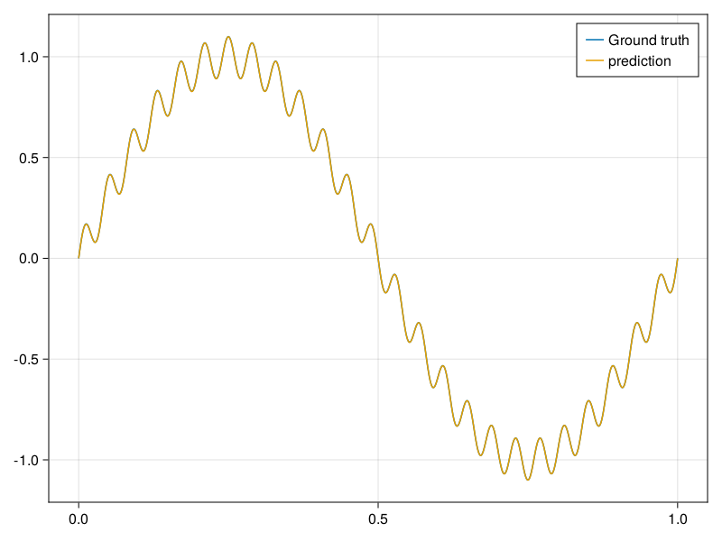

1D Poisson's Equation
This example is taken from Sifan Wang, Hanwen Wang, Paris Perdikaris (2021). Consider a simple 1D Poisson’s equation with Dirichlet boundary conditions. The solution is given by
\[u(x)=\sin (2 \pi x)+0.1 \sin (50 \pi x)\]
using ModelingToolkit, IntervalSets, Sophon
using Optimization, OptimizationOptimJL
using CairoMakie
@parameters x
@variables u(..)
Dₓ² = Differential(x)^2
f(x) = -4 * π^2 * sin(2 * π * x) - 250 * π^2 * sin(50 * π * x)
eq = Dₓ²(u(x)) ~ f(x)
domain = [x ∈ 0 .. 1]
bcs = [u(0) ~ 0, u(1) ~ 0]
@named poisson = PDESystem(eq, bcs, domain, [x], [u(x)])\[ \begin{align} \mathrm{\frac{d}{d x}}\left( \frac{du(x)}{dx} \right) =& - 39.47841760435743 \sin\left( 6.283185307179586 x \right) - 2467.4011002723396 \sin\left( 157.07963267948966 x \right) \end{align} \]
chain = Siren(1, 32, 32, 32, 32, 1)
pinn = PINN(chain)
sampler = QuasiRandomSampler(200, 1)
strategy = NonAdaptiveTraining(1 , 50)
prob = Sophon.discretize(poisson, pinn, sampler, strategy)
res = Optimization.solve(prob, BFGS(); maxiters=2000)
phi = pinn.phi
xs = 0:0.001:1
u_true = @. sin(2 * pi * xs) + 0.1 * sin(50 * pi * xs)
us = phi(xs', res.u)
fig = Figure()
axis = Axis(fig[1, 1])
lines!(xs, u_true; label="Ground Truth")
lines!(xs, vec(us); label="Prediction")
axislegend(axis)
fig
Compute the relative L2 error
using Integrals
u_analytical(x,p) = sin.(2 * pi .* x) + 0.1 * sin.(50 * pi .* x)
error(x,p) = abs2.(vec(phi([x;;],res.u)) .- u_analytical(x,p))
relative_L2_error = solve(IntegralProblem(error,0,1),HCubatureJL(),reltol=1e-3,abstol=1e-3) ./ solve(IntegralProblem((x,p) -> abs2.(u_analytical(x,p)),0, 1),HCubatureJL(),reltol=1e-3,abstol=1e-3)1-element Vector{Float64}:
2.226193329513299e-9